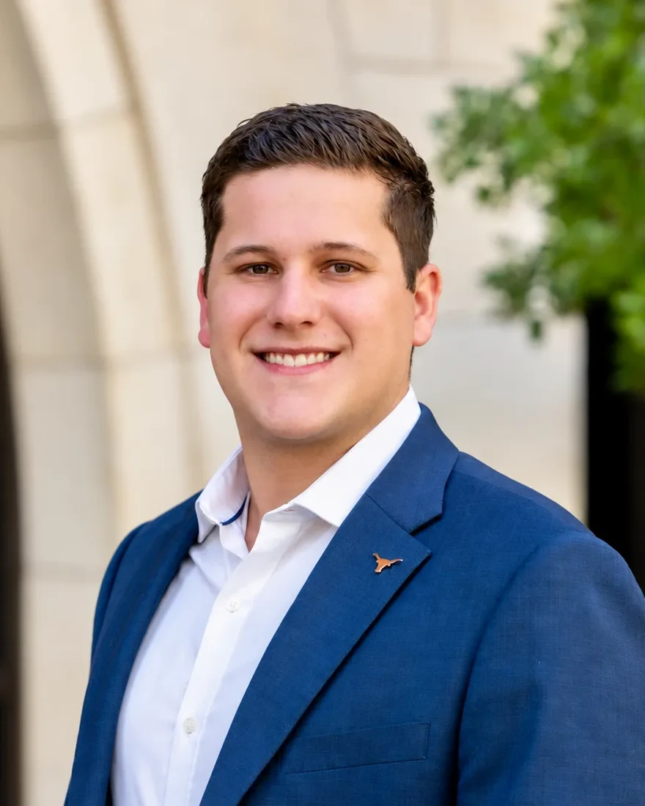
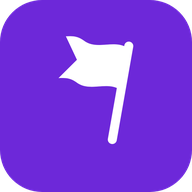
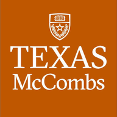

Senior Account Executive at Thesis, MBA candidate at UT Austin McCombs. I sell enterprise software and I can build it.

Mar 2026 to present
I identify target accounts and build account strategies across U.S. and LATAM enterprise SaaS markets, and I turn customer needs into solution requirements with product and technical teams. Pipeline is up 200%.
Apr 2024 to Mar 2026
I closed a contract of about $900K TCV within nine months. It was the largest in company history at the time, roughly nine times the typical deal. I reached 90% of quota in Year 1 (110% adjusted) and 105% in Year 2.
Sep 2020 to Mar 2024
I supported more than 50 enterprise opportunities, influenced over $10M in revenue and contributed to a 15% improvement in win rates. I owned the demo and technical evaluation, including a two-day onsite proof of concept, for a $3M Arizona higher-education modernization deal.
Apr 2019 to Sep 2020
I built user-facing features for a low-code ERP platform in AngularJS, TypeScript and JavaScript.
2014 to 2017
I built automation tools and infrastructure for global automotive manufacturing.

I built it with Next.js and REST APIs, connected to Anthropic, OpenAI, HubSpot, Gmail and Outlook. It runs CRM automation workflows that surface buying signals and recommend next actions, and it includes a chatbot that answers implementation questions.
Family comes first. I am a husband and a girl dad, and most of my free time goes to being with them. We travel whenever we can.
I play soccer, and I watch a lot of sports. I also run a dynasty fantasy football team, which is a year-round exercise in scouting, trades and long-term planning, and I take it more seriously than I should.
I like building tools with AI, and Livegoal.ai started that way. I am a first-generation Latino leader, I grew up speaking Portuguese, and I speak English and Spanish too.

Expected May 2027
Corporate strategy and enterprise operations. Elected VP of Networking and Philanthropy for the Graduate Business Council.
June 2020